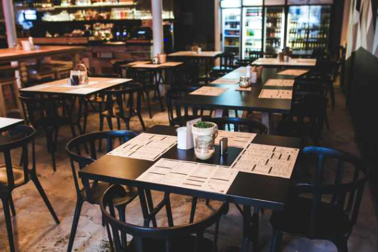

Welcome

Café Papanui is a family-run business established in the Christchurch suburb of Papanui in 1989.
We serve a mixture of European and traditional Māori dishes, and specialise in selling organic food using fresh, high quality, local ingredients. We are passionate about running an environmentally friendly business using sustainable business practices and biodegradable packaging.
Drop in anytime for the best organic kai and a chat, we'd love to meet you!
0:00
/
Welcome